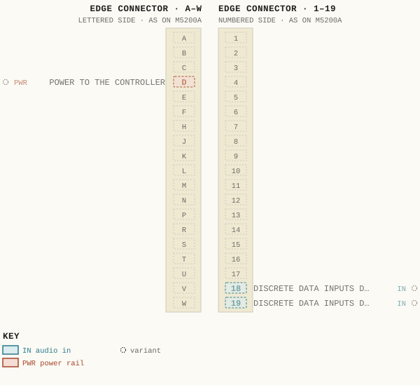
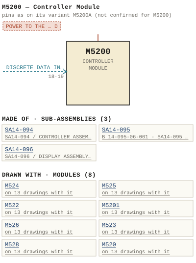

M5200 — Controller Module
| Type | module |
| Category | COMPUTERS |
| Try it | simulator & front panel · download package (zip) |
| Earliest dated evidence | 1985|18 — manual issue date |
| Evidence | "Issue #1 August 1985" in PUBLIC/Manuals + tech DOCUMENTS/Modules/M5200 Controller Module/WBS M5200 p16(1).JPG |
| Confidence | high |
| All years found | 1985|18, 1986|19 |
| Variants | M5200A |
| Folder | Modules/COMPUTERS/M5200 |
| Folder | Modules/COMPUTERS/M5201 |
| Folder | Modules/COMPUTERS/M524 |
Connections
What it is made of and what it is part of.
Pictures


M5200.pinout.svg

M5200.connections.svg 1985 - M5200 - p16.jpg
1985 - M5200 - p16.jpg 1986 - M5200 - p2.jpg
1986 - M5200 - p2.jpg 1986 - M5200 - p38.jpg
1986 - M5200 - p38.jpg 19xx - M5200 - AD - WBSPS - AD - LS series 003.jpg
19xx - M5200 - AD - WBSPS - AD - LS series 003.jpg 1985 - M5200 - 14-094-06-001 - CONTROLLER ASSEMBLY COMPONENT LAYOUT.jpg
1985 - M5200 - 14-094-06-001 - CONTROLLER ASSEMBLY COMPONENT LAYOUT.jpg 1985 - M5200 - 14-095-02-001 - INTERFACE ASSEMBLY SCHEMATIC.jpg
1985 - M5200 - 14-095-02-001 - INTERFACE ASSEMBLY SCHEMATIC.jpg 1985 - M5200 - 14-096-06-001 - ASSEMBLY COMPONENT LAYOUT.jpg
1985 - M5200 - 14-096-06-001 - ASSEMBLY COMPONENT LAYOUT.jpg 1985 - M5200 - B 14-094-02-001-2 - SA14-094 - CONTROLLER ASSEMBLY - SCHEMATIC (2).jpg
1985 - M5200 - B 14-094-02-001-2 - SA14-094 - CONTROLLER ASSEMBLY - SCHEMATIC (2).jpg 1985 - M5200 - B 14-094-02-001-2 - SA14-094 - CONTROLLER ASSEMBLY - SCHEMATIC.jpg
1985 - M5200 - B 14-094-02-001-2 - SA14-094 - CONTROLLER ASSEMBLY - SCHEMATIC.jpg 1985 - M5200 - B 14-095-06-001 - SA14-095 - INTERFACE ASSEMBLY - COMPONENT LAYOUT.jpg
1985 - M5200 - B 14-095-06-001 - SA14-095 - INTERFACE ASSEMBLY - COMPONENT LAYOUT.jpg 1985 - M5200 - B 14-096-02-001 - SA14-096 - DISPLAY ASSEMBLY - SCHEMATIC (2).jpg
1985 - M5200 - B 14-096-02-001 - SA14-096 - DISPLAY ASSEMBLY - SCHEMATIC (2).jpg 1985 - M5200 - B 14-096-02-001 - SA14-096 - DISPLAY ASSEMBLY - SCHEMATIC.jpg
1985 - M5200 - B 14-096-02-001 - SA14-096 - DISPLAY ASSEMBLY - SCHEMATIC.jpg 1985 - M5200 - B 5200-02-001 - M5200 - CONTROLLER MODULE - SCHEMATIC.jpg
1985 - M5200 - B 5200-02-001 - M5200 - CONTROLLER MODULE - SCHEMATIC.jpg 1985 - M5200 - B 5200-04-001 - M5200 - CONTROLLER MODULE - MODULE LAYOUT.jpg
1985 - M5200 - B 5200-04-001 - M5200 - CONTROLLER MODULE - MODULE LAYOUT.jpg 1985 - M5200 - CONNECTOR LAYOUT M5200 CONTROLLER MODULE.jpg
1985 - M5200 - CONNECTOR LAYOUT M5200 CONTROLLER MODULE.jpg 1985 - M5200 - D 14-094-02-001-1 - SA14-094 - CONTROLLER ASSEMBLY - SCHEMATIC.jpg
1985 - M5200 - D 14-094-02-001-1 - SA14-094 - CONTROLLER ASSEMBLY - SCHEMATIC.jpg 1985 - M5200 - TYPICAL M5200 SYSTEM INTERCONNECT FOR ST SERIES CONSOLES.jpg
1985 - M5200 - TYPICAL M5200 SYSTEM INTERCONNECT FOR ST SERIES CONSOLES.jpg 1985 - M5200 - p1.jpg
1985 - M5200 - p1.jpg 1985 - M5200 - p11.jpg
1985 - M5200 - p11.jpg 1985 - M5200 - p13.jpg
1985 - M5200 - p13.jpg 1985 - M5200 - p14.jpg
1985 - M5200 - p14.jpg 1985 - M5200 - p15.jpg
1985 - M5200 - p15.jpg 1985 - M5200 - p17.jpg
1985 - M5200 - p17.jpg 1985 - M5200 - p18.jpg
1985 - M5200 - p18.jpg 1985 - M5200 - p19.jpg
1985 - M5200 - p19.jpg 1985 - M5200 - p20.jpg
1985 - M5200 - p20.jpg 1985 - M5200 - p21.jpg
1985 - M5200 - p21.jpg 1985 - M5200 - p22.jpg
1985 - M5200 - p22.jpg 1985 - M5200 - p23.jpg
1985 - M5200 - p23.jpg 1985 - M5200 - p24.jpg
1985 - M5200 - p24.jpg 1985 - M5200 - p25.jpg
1985 - M5200 - p25.jpg 1985 - M5200 - p26.jpg
1985 - M5200 - p26.jpg 1985 - M5200 - p27.jpg
1985 - M5200 - p27.jpg 1985 - M5200 - p28.jpg
1985 - M5200 - p28.jpg 1985 - M5200 - p29.jpg
1985 - M5200 - p29.jpg 1985 - M5200 - p3.jpg
1985 - M5200 - p3.jpg 1985 - M5200 - p30.jpg
1985 - M5200 - p30.jpg 1985 - M5200 - p31.jpg
1985 - M5200 - p31.jpg 1985 - M5200 - p32.jpg
1985 - M5200 - p32.jpg 1985 - M5200 - p33.jpg
1985 - M5200 - p33.jpg 1985 - M5200 - p34.jpg
1985 - M5200 - p34.jpg 1985 - M5200 - p35.jpg
1985 - M5200 - p35.jpg 1985 - M5200 - p36.jpg
1985 - M5200 - p36.jpg 1985 - M5200 - p37.jpg
1985 - M5200 - p37.jpg 1985 - M5200 - p39.jpg
1985 - M5200 - p39.jpg 1985 - M5200 - p4.jpg
1985 - M5200 - p4.jpg 1985 - M5200 - p40.jpg
1985 - M5200 - p40.jpg 1985 - M5200 - p5.jpg
1985 - M5200 - p5.jpg 1985 - M5200 - p6.jpg
1985 - M5200 - p6.jpg 1985 - M5200 - p7.jpg
1985 - M5200 - p7.jpg 1985 - M5200 - p8.jpg
1985 - M5200 - p8.jpg 1985 - M5200 - p9.jpg
1985 - M5200 - p9.jpg 19xx - 5200-02-002 - CONTROLLER MODULE SCHEMATIC.jpg
19xx - 5200-02-002 - CONTROLLER MODULE SCHEMATIC.jpg 19xx - 5200-04-002 - CONTROLLER MODULE MODULE LAYOUT (2).jpg
19xx - 5200-04-002 - CONTROLLER MODULE MODULE LAYOUT (2).jpg 19xx - 5200-04-002 - M5200A CONTROLLER MODULE MODULE LAYOUT - ISS 2.jpg
19xx - 5200-04-002 - M5200A CONTROLLER MODULE MODULE LAYOUT - ISS 2.jpg 19xx - M5201 - Connector Layout M5201 Machine Control Module P8.jpg
19xx - M5201 - Connector Layout M5201 Machine Control Module P8.jpg 1985 - M5200A - 006.jpg
1985 - M5200A - 006.jpg 1985 - M5200A - 028 (2).jpg
1985 - M5200A - 028 (2).jpg 1985 - M5200A - 028.jpg
1985 - M5200A - 028.jpg 1985 - M5200A - WBS M5200A_Page_23.jpg
1985 - M5200A - WBS M5200A_Page_23.jpg 1985 - M5200A - WBS M5200A_Page_36.jpg
1985 - M5200A - WBS M5200A_Page_36.jpg 1986 - M5201 - p16.jpg
1986 - M5201 - p16.jpg 1986 - M5201 - p24.jpg
1986 - M5201 - p24.jpg 1986 - M5201 - p27.jpg
1986 - M5201 - p27.jpg 1986 - M5201 - p8.jpg
1986 - M5201 - p8.jpg 1986 - M5201 - p9.jpg
1986 - M5201 - p9.jpg 19xx - M5200 - Typical M5200 System Interconnect for ST Series Consoles.jpg
19xx - M5200 - Typical M5200 System Interconnect for ST Series Consoles.jpg 19xx - M5200 - Connector Layout M5200 Controller Module.jpg
19xx - M5200 - Connector Layout M5200 Controller Module.jpg 19xx - 5200-02-001 - CONTROLLER MODULE SCHEMATIC - ISS 1.jpg
19xx - 5200-02-001 - CONTROLLER MODULE SCHEMATIC - ISS 1.jpg 19xx - 5200-04-001 - CONTROLLER MODULE MODULE LAYOUT - ISS 1.jpg
19xx - 5200-04-001 - CONTROLLER MODULE MODULE LAYOUT - ISS 1.jpg 19xx - 5200-04-002 - CONTROLLER MODULE MODULE LAYOUT.jpg
19xx - 5200-04-002 - CONTROLLER MODULE MODULE LAYOUT.jpgPinout & connections
No page of its own numbers M5200's contacts: these are its variant M5200A's, drawn faded — not confirmed for M5200.
pinout (SVG) · connections (SVG) · pins (JSON)
Pin evidence — 3 contacts
| Pin | Signal | Kind | Confidence | Read from | Source |
|---|---|---|---|---|---|
| D | POWER TO THE CONTROLLER | power rail | variant | prose | 1985 - M5200A - 002.pdf, p. 6 “The power to the controller is via a 15 pin D ' connector. 2-1” |
| 18 | DISCRETE DATA INPUTS DATA PORT 7600H PROVIDES | audio in | variant | prose | 1985 - M5200A - 002.pdf, p. 35 “Discrete Data Inputs Data port 7600H provides 16 isolated control inputs Each input is isolated with an opto-coupler with both sides of eac…” |
| 19 | DISCRETE DATA INPUTS DATA PORT 7600H PROVIDES | audio in | variant | prose | 1985 - M5200A - 002.pdf, p. 35 “Discrete Data Inputs Data port 7600H provides 16 isolated control inputs Each input is isolated with an opto-coupler with both sides of eac…” |
Dates found in the documents
| Year | Kind | Text | File |
|---|---|---|---|
| 1985|18 | manual issue date | Issue #1 August 1985 |
1985 - M5200 - p16.jpg |
| 1986|19 | manual issue date | MANUAL ISSUE #1 DECEMBER 1986 |
1986 - M5200 - p2.jpg |
| 1986|19 | manual issue date | Issue #2 February 1986 |
1986 - M5200 - p38.jpg |
Physical manual inventory
| Item | Location | Status | Scanned |
|---|---|---|---|
| Controller Module | LOOSE BOX | DUPLICATE | |
| M5200A - Controller Module | SCANNED BUT NEEDS STICHING | ||
| M5200 Controller Module | LOOSE BOX |
Ads & brochures
- 19xx - M5200 - AD - WBSPS - AD - LS series 003.jpg
- 19xx - M5201 - AD - WBSPS - AD - LS series 003.jpg
- 19xx - M524 - AD - WBSPS - AD - LS series 003.jpg
- 19xx - M526 - AD - WBSPS - AD - LS series 003.jpg
- 19xx - M522 - AD - WBSPS - AD - LS series 003.jpg
- 19xx - M520 - AD - WBSPS - AD - LS series 003.jpg
- 19xx - M521 - AD - WBSPS - AD - LS series 003.jpg
- 19xx - M525 - AD - WBSPS - AD - LS series 003.jpg
- 19xx - M523 - AD - WBSPS - AD - LS series 003.jpg
- 19xx - M527 - AD - WBSPS - AD - LS series 003.jpg
- 19xx - M528 - AD - WBSPS - AD - LS series 003.jpg


Photos & scans (54)


Sub-assemblies & parts used (3)
| Item | What | Family | Year | How we know |
|---|---|---|---|---|
| SA14-094 | SA14-094 / CONTROLLER ASSEMBLY / SCHEMATIC | Circuit boards (SA14-nnn) | its circuit board | |
| SA14-095 | B 14-095-06-001 - SA14-095 - INTERFACE ASSEMBLY - COMPONENT LAYOUT | Circuit boards (SA14-nnn) | its circuit board | |
| SA14-096 | SA14-096 / DISPLAY ASSEMBLY / SCHEMATIC | Circuit boards (SA14-nnn) | drawing filed with it |
Parts list — board SA14-094 (8 parts)
From 1985 - M5200 - p27.jpg, page 1 (scanned); also in timelines/data/bom.csv.
| Ref | Part | Value | Manufacturer | Mfr part no. |
|---|---|---|---|---|
| R131 | Resistor 1/4w 240 Philips CR25 | 5% | ||
| R133 | Sot | |||
| J13 | Pin Dip Socket AMP | 16 | 640358-3 | |
| P9 | Pin TEEE NCY 37P 2A4K | 37 | ||
| P10 | Pin NAY 1SP 2BON | 15 | ||
| P11 | Pin TEB/Ansley | 40 | 609_4O07E | |
| Q1 | Transistor National | PN3645 | ||
| R1 | Resistor 1/4w 15 Philips CR25 | 59 |
Parts list — board SA14-095 (32 parts)
From 1985 - M5200 - p36.jpg, page 1 (scanned); also in timelines/data/bom.csv.
| Ref | Part | Value | Manufacturer | Mfr part no. |
|---|---|---|---|---|
| R31 | SIP Resistor Network Bourns WBS | 82 | 15-001 | |
| R32 | Resistor 1/4W 15 Philips CR25 | 59 | ||
| R33 | SIP Resistor Network 1CK Bourns WBS | 15-002 | ||
| R34 | 3K/6K2 WBS | 15-003 | ||
| R36 | WBS | 82 | 15-001 | |
| R40 | Resistor 1/4W 15 Philips CR25 | 59 | ||
| R41 | SIP Resistor Network Bourns WBS | 10K | 15-002 | |
| R42 | Resistor 1/4W 10K Philips CR25 | 576 | ||
| U6 | NSC81OAN-4 | |||
| U8 | 74HCZLSN | |||
| U11 | NSC81OAN-4 | |||
| P12 | Pin Transition Connector 609-4003 3 | 40 | ||
| R1 | SIP Resistor Network Bourns WBS | 10K | 15-002 | |
| R2 | 3K/6K2 WBS 15-003 | 3 | ||
| R4 | WBS | 82 | 15-001 | |
| R8 | Resistor 1/4w 15 Philips CR25 P | 5% | ||
| R9 | SIP Resistor Network 1CK Bourns WBS 15-002 ` | |||
| R10 | 3K/6K2 WBS | 15-003 | ||
| R12 | WBS | 82 | 15-001 | |
| R16 | Resistor 1/4w 15 Philips CR25 | 5% | ||
| R17 | SIP Resistor Network Bourns WBS | 10K | 15-002 | |
| R18 | 3K/6K2 WBS | 15-003 | ||
| R24 | Resistor 1/4w 15 Philips CR25 | 59 | ||
| R25 | SIP Resistor Network Bourns WBS | 10K | 15-002 | |
| R26 | 3K/6K2 WBS | 15-003 | ||
| R28 | WBS | 82 | 15-001 | |
| C13 | uF/1oo Sprague | 1C1OXZR1O4MOSOB | ||
| C14 | uF/10 Kemet | 4.7 | T390B475M01OAS | |
| C18 | 0. uF/100 Sprague | 1C1OXZRTO4MOSOB | ||
| C19 | uF/10 Kemet | 4.7 | T390B475MO1OAS | |
| C23 | uF/1oo Sprague | 0.1 | 1C1OXZRIO4MOSOB | |
| C24 | uF/10 Kemet | 4.7 | T390B475M010AS |
Named in other drawings & documents (16)
From the manuals
Each manual split into its sections. Text that is the same in many Ward-Beck manuals (warranty, address, standard notes) is kept once on the Boilerplate page and linked.
General description (6)
Description — 354 words · 1985 - M5200 - p17.jpg, page 1
SA14-094 CONTROLLER ASSEMBL Y Microprocessor P' The NsC800 CMos microprocessor utilizes the 28o instruction set . It is an bit processor with 16 bit addressing capability (64K) _ The lower eight address lines are multiplexed onto the bit data bus_ The clock frequency of the microprocessor is crystal controlled by mHz crystal Power Fail and Reset Comparator U11 senses drop in the volt supply voltage driving the non maskable interrupt of the microprocessor at pin 21 This arrests the execution of instructions before the power is totally lost .
The output of U11 also inhibits the RAM memory (U10) at this time _ 414, 415 and 416 make up power fail control circuit. This circuit uses the passage of time to establish whether power interruption has happened or whether full power failure has occured and the ST series of console system should be shut down (all channels, subs and monitoring turned off) _ This circui try is powered from the backup nickel cadmium battery _ On the occurance of power interruption, counter U14 is enabled at pin 11 (sw: tches to logic 0) and the oscillator U15 pins and starts the count The counter outputs labelled through are available to set the power interrupt time period_ The typical times are seconds, 16 seconds_ 30 seconds, minute, minutes and minutes.
As shipped from the factory the minute jumper is in. The counter output at pin 11 of 015 sets the power fail Iatch 416 (pins through 13) . The Iatch output drives the fail LED DSI and through 415 Pin the fourth input of data buffer u24 If the power interruption is less than the set period of time (4 minutes) then the system will be restored to its state prior to the power interruption.
If it lasts longer than the set time period the system, upon recovery of power will remain in shut down state (all channels subs and monitors turned off and any control functions released ) The power fail Iatch (U16) is reset or cleared under software control This is achieved by the addressing output at U28 pin (address select 7BO0H) 1-1
- source: 1985 - M5200 - p17.jpg, p. 1
Description — 320 words · 1985 - M5200 - p8.jpg, page 1
AND SYSTEM INTERCONNECT M52o0 CONTROLLER MODULE The M5200 is the central controll ing unit for ST series of Stereo Television consoles. Data interconnects to major sections of the console system are via multiconductor ribbon cab les which terminate on standard 37 pin 'D' connectors This multi-interconnect technique is used to provide the maximum degree of isolation between various functions as well as facilitate the ease of system service and expansion The data ports connect to the console system in the following way: J1 (7000) Reads tally data from input channels to 12 _ Sends control data to remotely control the channel and solo on/off functions applicable with M524A Programmer) J2 (7100) : Reads tally data from input channels 13 to 24 _ Sends control data to remotely control the channel and solo on/off functions (applicable with M524A Programmer) _ J3 (7200) Reads tally data from input channels 25 to 36 _ Sends control data to remotely control the channel and solo on/off functions (applicable with M524A Programmer) J4 (7300) : Reads tally data from input channels 37 to 48 _ Sends control data to remotely control the channel and solo on/off functions (appplicable with M52LA Programmer) J5 (7400) Reads tally data from submaster channels to 8 .
Sends control data to remotely control the sub and solo on/off functions (applicable with M524A Programmer ) J6 (7500) : Reads pushbutton control information from monitor chan- nels to Sends tally information to the M525 Monitor Modules J7 (7600) Reads pushbutton control information from the optional M524A Programmer Reads data from external inputs on the optional M5201 Machine Control Module- Sends tally information to the M524A Programmer and the optional M526 Overload Status Modules Send tally data to the optional M5201 Machine Control Module.
J8 (7700) : Sends control information to the external Rs8024 Stereo Routing Switcher_ Tallying information is also read from the switcher to confirm the appropriate crosspoint clos_ ures 3-1
- source: 1985 - M5200 - p8.jpg, p. 1
Description — 346 words · 1985 - M5200 - p21.jpg, page 1
SA14-094 CONTROLLER ASSEMBL Y Section 11, 12 and 13 of u29 performs an AND gate select function between address select 7FOOH and the NWR control output from the microprocessor Miscellaneous u24 is an bit buffer which is available for feeding unitary status inputs into the system. Presently input bit #4 reads the status of the power fail Tatch This buffer is addressed by select code 7DOOH .
Latch u27 along with the oscillator composed of three sections of U28, R78 , R79 , C18 and C19, form Rea Time clock which may be used for timing various software system functions. The status of this clock is fed to bit #0 of buffer u24 . For present applications in the ST series of Stereo Television consoles 'this function is not utilized _ Power Supply Decoupling The unregulated 10/12 volt dc supply is fed into the Controller Module via P1o_ SW1 is 1.5 amp breaker switch.
The cathode of polarity reversing diode CRS connects to the volt regulator U38 and the constant current charging circuit (01 and Q2) for the nickel cadmium battery B1 The output voltage from regulator 438 is set by R131_ R132 and R133 . The regulated supply voltage should be between 5.0 and 5.5 volts Zener diode CR6 is backup protection in the event regulator 438 shou- Id fail, placing 12 volts on the supply rail.
Under normal conditions this zener diode is not conducting. The regulated volt supply voltage, when present feeds the IC' s which are powered by the backup battery through Schottky diode CR8_ Blocking transistor Q3 is reverse biased and off when the supply voltage is present. Upon the occurance of power failure 03 will turn on , provided the base is grounded through the battery backup strap on power connector P1O (pins 15 and 7) _ The 3.6 volt battery voltage will be applied to IC' s U10, 014, U15, 016, 426 , 430 U32 and 433 .
Under these conditions CR8 now blocks the backup voltage from the remainder of the circuitry (CR8 is now reverse biased) 1-5
- source: 1985 - M5200 - p21.jpg, p. 1
- also in: 1985 - M5200 - p9.jpg, p. 1 · 1985 - M5200 - p22.jpg, p. 1 · 1985 - M5200 - p40.jpg, p. 1
Specifications (1)
Technical Data — 108 words · 1985 - M5200 - p6.jpg, page 1
M52oo CONTROLLER MODULE Microprocessor: NSC800 Memory: EPROM: NMC2732 (4K EEPROM: X2816 (2K RAM: NM2116 (2K 8 ) 8 ) 8 ) Logic Levels: Standard volt HC series Tevels _ Logic 1 : 3.5V min 20 mA source Logic 0: 1V max 20 mA sink. Clock Frequency mHz crystal +/-.003% _ Status Indication Seven segment display . Power Requirements: 10/12 volts dc, unregulated, 0.5 amp Circuit Protection 1.5 amp circuit breaker, current Iimi ting regulators and overvoltage protecting zener diode .
Amb ient Temperature: to 60 degrees Celsius_ Dimensions: 19.00" wide 1.75" high 16.00" deep (483 mm 44 mm 406 mm ) Weight: 10 Ibs 0z (4.7 kg) 1-1
- source: 1985 - M5200 - p6.jpg, p. 1
Circuit description (4)
Circuit Description — 343 words · 1985 - M5200 - p19.jpg, page 1
SA14-094 CONTROLLER ASSEMBL Y Memory Latch u2 holds the multiplexed address bits which are placed on the data bus during the address ing interval _ The microprocessor ALE select pulse (u1 pin 30 ) is the Iatch enter pulse (u2 pin 11 ) . These addressing bits select the lower 256 locations of all memory IC 5 . The operating system software is located in 4K EPROMS 43, 44 and u5 .
u6 and u7 provide for future expansion and system customization. EEPROM u8 retains all mute and machine control coding. It will also retain the R58024 Stereo Routing Switcher display codes when this option is implemented_ U10 is 2K X random access scratch pad memory used by the operating system. During power interruptions voltage is applied to this RAM via the battery backup facilities Data Port_Buffers Data port buffers 7000H, 7100H and 7200H are located on this assemb Iy .
Port 7000H wil[ be described, as the operation of the other Ports are similar The programmable interface chip 439 has three data ports which may be utilized as inputs or outputs, all under software control These ports may be used to store the incoming and outgoing data tempo- rarily The two bit data ports of 439 are buffered to the outside world through bi-directional transceivers U41 and 442 .
The networks on the external side of U41 and U42 provide the necessary terminating and isolation requirements to feed multiconductor ribbon cable. These two bit data ports send and receiVe data from external peripheral devices The bit data port from u39 (pins 1, 2 , 5, 37 , 38 and 39 ) is utilized as Tatched outputs only The lower bits are used as NRD NWR and NALE control Tines _ The upper bits are fed to of decoder U40 , which provides address select outputs Dependent upon data port applications address select #5 and the NALE control Tine may be interchanged as required_ This is determined by solder Iink L8 .
Buffer U43 isolates these control lines from the outside world_ 1-3
- source: 1985 - M5200 - p19.jpg, p. 1
Circuit Description — 312 words · 1985 - M5200 - p18.jpg, page 1
SA14-094 CONTROLLER ASSEMBL Y The reset function of the microprocessor may be done manually by grounding pin 13 of 94J13 _ This is accomplished by the use of the reset pushbutton located on the front panel of the controller This pushbutton is part of the SA14-096 Subassembly _ The reset function will also occur automatically if for some reason the processor gets out of address range and stops executing the operating system software correctly _ Reset is achieved through the hardware watchdog consisiting of the retriggerable one shot 412 and the Hz reset oscillator 013 pins to 3 . Normal execution of the sof tware pulses pin of U12 retrigger_ ing it _ This inhibits the reset oscillator by holding pin of U13 at logic level Addressing The upper four bits of the 16 bit addressing are decoded by the of decoders U19 and u20 _ U19 decodes the addressing in 4K segments_ This corresponds to the EPROM memories u3 through u7 _ Standard systems utilize 43, U4 and u5 for the operating system software_ The of decoder 021 provides 2K address selections for EEPROM u8 (3000H) future EPROM u9 (3800H)_ RAM 410 4OOOH ) and the select - ions to feed the internal data buses externally (48O0H ) The of 16 decoder u22 breaks down addresses from 7OO0H to 7FFFH into 256 bytes to provide address control selections for the data port peripheral interfaces_ This applies to codes 7O00H through 7700H _ The following 7O00H series address codes provide specific system control functions 7AOOH software controlled reset function to all data port peripheral interfaces resets power fail Iatch 016 = resets external port control Iatch U34 _ ` selects data input buffer u24 . . ' _ selects optional time of day clock U26 _ , . . selects status display Iatch U25 _ ' 7BOOH 7COOH 7DOOH 7EOOH 7FOOH
1-2
- source: 1985 - M5200 - p18.jpg, p. 1
Circuit Description — 290 words · 1985 - M5200 - p20.jpg, page 1
SA14-094 CONTROLLER ASSEMBLY Each data port appears on of the Controller Module. 37 pin 'D' female connector at the rear Internal Bus_Buffers The optional bi-directional transceiver buffers u35, u36 and 037 feed the internal bit data bus, 12 bits of addressing as wel as control Iine functions NRD , NWR and address select 48O0H to data connector P9 _ This data access is for expansion capabilities and provides of direct memory access into and out of the control system.
means Presently this feature is not utilized in the ST series of Stereo Television consoles_ When the SA14-094 Controller Assembly is being utilized in MS2OOB Controller the IC sockets for u35 and u36 are used to interconnect the 5A14-142 assembly to the external "D" connector P9 The inter_ connecting cables transfer the serial data and clocking information to the al phanumeric source displays associated with the Rs8024 Stereo Routing Switcher NOTE: When installing 16 conductor ribbon cables from SA14-142 assembly to SA14-094 assembly, connector P35 Pin is installed into IC socket u35 pin 2 _ Connector P36 pin is installed into IC socket u36 pin Clock 426 is time of day clock chip that drives the optional clock and timer displays.
The clock is crystal controlled by XT2 (32.768 kHz)_ The optional clock is under complete software control _ Status_Display ^ seven segment readout display on the front of the Controller Module (part of the SA14-096 Subassembly ) provides an indication of the processor operation. Latch u25 stores the data bits, which in turn determines the segments of the status display that are MVuminated _ As the system executes different routines of the operating system software various segments are i uminated, giving somewhat of visual indication of the system operation 1-4
- source: 1985 - M5200 - p20.jpg, p. 1
- also in: 1985 - M5200 - p33.jpg, p. 1
Parts list (text) (2)
Parts List — 131 words · 1985 - M5200 - p34.jpg, page 1
SA14-095 INTERFACE ASSEMBL Y PART DESCRIPT ION MFG MFG PART NUMBER Capacitor 4.7 uF/10 10 uF/25 V 0.1 uF/100 4.7 uF/10 4.7 uF/10 Kemet T390B475MO1OAS T390C106MO25AS 1C1OXZRIO4MOSOB T390B475MO1OAS 8 8 C10 C11 C12 C13 C14 C15 Sprague Kemet 4.7 uF/10 V 10 uF/25 V 0.1 uF/100 4.7 uF/10 4.7 uF/10 T39OC1O06MO25AS 1C1OXZRIO4MOSOB T390B475MO1OAS Sprague Kemet 4.7 uF/10 10 uF/25 uF/1oo 4.7 uF/10 uF/10 T390C106MO25AS 1C1OXZR1O4MOSOB T390B475M01OAS Sprague Kemet C16 C17 C18 C19 C20 4.7 uF/10 10 uF/25 0 .
uF/100 4.7 uF/10 4.7 uF/1o T39OC1O6MO25AS 1C1OXZRTO4MOSOB T390B475MO1OAS Sprague Kemet C21 C22 C23 C24 C25 C26 4.7 uF/10 10 uF/25 V 0.1 uF/1oo 4.7 uF/10 4.7 uF/10 4.7 uF/10 T39OC1O6MO2SAS 1C1OXZRIO4MOSOB T390B475M010AS Sprague Kemet CRI CR2 CR3 CRL CRS CR6 Diode Fairchild 1N4148 Connector 37 Pin TEEE NCY 375 2A4K 1 2-1
- source: 1985 - M5200 - p34.jpg, p. 1
Parts List — 66 words · 1985 - M5200 - p27.jpg, page 1
SA14-094 CONTROLLER ASSEMBL Y PART DESCRIPT ION MFG MFG PART NUMBER R131 R132 R133 R134 R135 Resistor 1/4w 5% 240 750 SOt 100 15K Philips CR25
: R136 R137 2K2 2K2 R138 To R145 15K R146 To R153 6K2 R154 To R161 75 R162 To R169 3K R170 To R177 6K2 R178 To R185 75 R186 To R193 3K
R194 15 R195 To R2o1 15K 2-5
- source: 1985 - M5200 - p27.jpg, p. 1
Drawings (11)
Each scan with its trace laid over it: the slider runs from the scan to the vector drawing. Click one to see it large and save it as SVG, DXF, KiCad, PDF or PowerPoint.
1985 - M5200 - B 14-094-02-001-2 - SA14-094 - CONTROLLER ASSEMBLY - SCHEMATIC (2)viewer
1985 - M5200 - B 14-094-02-001-2 - SA14-094 - CONTROLLER ASSEMBLY - SCHEMATICviewer
1985 - M5200 - D 14-094-02-001-1 - SA14-094 - CONTROLLER ASSEMBLY - SCHEMATICviewer
Interface Assembly Schematicviewer
1985 - M5200 - B 14-096-02-001 - SA14-096 - DISPLAY ASSEMBLY - SCHEMATIC (2)viewer
1985 - M5200 - B 14-096-02-001 - SA14-096 - DISPLAY ASSEMBLY - SCHEMATICviewer
1985 - M5200 - B 5200-02-001 - M5200 - CONTROLLER MODULE - SCHEMATICviewer
M5200 / CONTROLLER MODULE / SCHEMATICviewer
CONTROLLER MODULE / SCHEMATICviewer
Controller Assembly Component Layoutviewer
1985 - M5200 - B 14-095-06-001 - SA14-095 - INTERFACE ASSEMBLY - COMPONENT LAYOUTviewer
Assembly Component Layoutviewer
1985 - M5200 - B 5200-04-001 - M5200 - CONTROLLER MODULE - MODULE LAYOUTviewer
M5200 / CONTROLLER MODULE / MODULE LAYOUTviewer
CONTROLLER MODULE / MODULE LAYOUTviewer
CONTROLLER MODULE / MODULE LAYOUTviewer
M5200A / CONTROLLER MODULE / MODULE LAYOUTviewer
Connector Layout M5200 Controller Moduleviewer
Typical M5200 System Interconnect for ST Series Consolesviewer
Read from the drawing title blocks.
| Drawing | Title | Date | Drawn by | Checked by | Iss. | Source |
|---|---|---|---|---|---|---|
| — | Typical M5200 System Interconnect for ST Series Consoles | file | ||||
| — | Connector Layout M5200 Controller Module | file | ||||
| 14-094-06-001 | Controller Assembly Component Layout | 1 | file | |||
| 14-095-02-001 | Interface Assembly Schematic | 1 | file | |||
| 14-096-06-001 | Assembly Component Layout | 2 | file | |||
| B 5200-02-001 | M5200 / CONTROLLER MODULE / SCHEMATIC | 1 | file | |||
| B 5200-02-002 | CONTROLLER MODULE / SCHEMATIC | file | ||||
| B 5200-04-001 | M5200 / CONTROLLER MODULE / MODULE LAYOUT | 1 | file | |||
| B 5200-04-002 | M5200A / CONTROLLER MODULE / MODULE LAYOUT | 2 | file | |||
| B 5200-04-002 | CONTROLLER MODULE / MODULE LAYOUT | file | ||||
| B 5200-04-002 | CONTROLLER MODULE / MODULE LAYOUT | file |